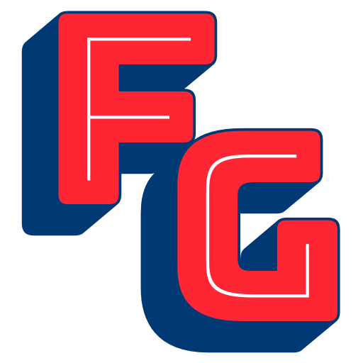
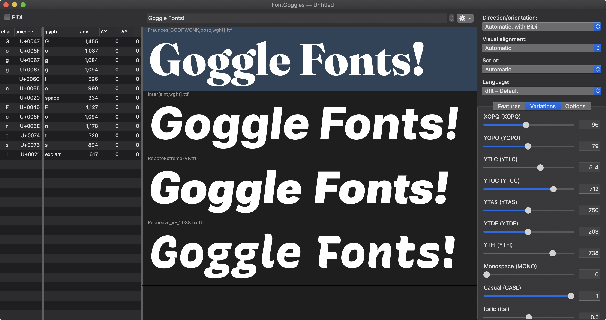
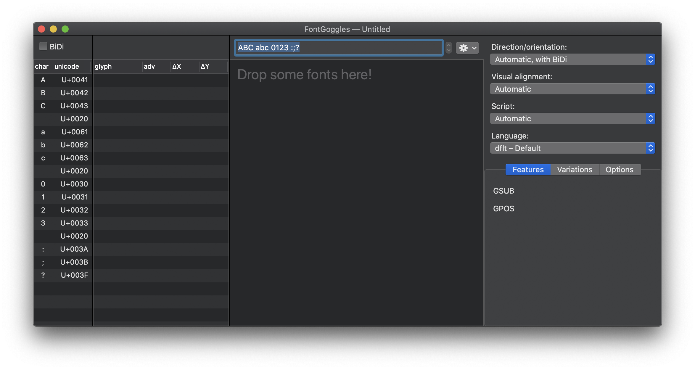
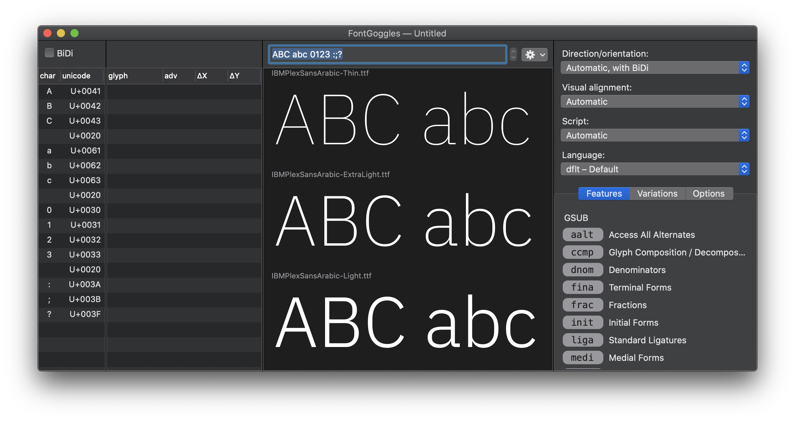
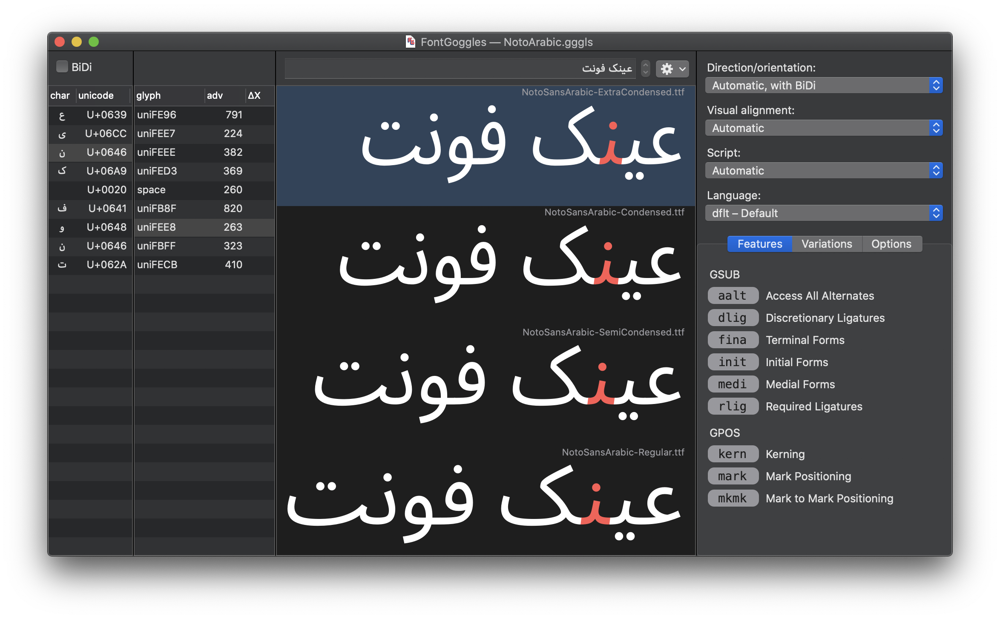

Rich Font Previewing and Comparing
FontGoggles is a font viewer for various font formats. It is a desktop application for macOS. It is free and open source.
The main focus is text behavior, specifically text shaping and variation behavior.
You can download the latest release here.
The following font formats are supported:
Core features:

Drop some fonts (or folders with fonts) onto the application, or launch the application, and drop some fonts onto the window.
An empty window looks like this:  After opening some fonts it will look like this: 

Most panels in the window are resizable, and some are collapsable. There are also “View” menu items to show and hide a few panels:
Instead of typing the text into the text field, you may load an external text file, using the “Load Text File...” menu under “View”, or with the “gear” popup menu next to the text field.
Once loaded, you can navigate through the lines of the text file with the “stepper” control next to the text field. The “View” menu has shortcuts for this: ⌘-arrow-key-up and ⌘-arrow-key-down to go to the previous or next line respectively.
You can keep editing the text file in a text editor while it is loaded in FontGoggles: it will reload the text file and show the changes.
You can save a window as a .gggls project file. It will store all text,
formatting and window settings.
Note: The file stores relative paths to the font files, so its location is related on the location of the font files. They can move together, but if sources move or the project file moves, the source references in the project file become invalid.
If a font gets changed on-disk by another application, FontGoggles will reload it and show the updated version. For example, this happens, when you:
Note: FontGoggles does its very best to reload as quickly as possible, but for .ufo and .designspace it may have to re-compile OpenType features, and the time needed depends on the complexity of the font.
If, during the (re)loading of a font, a warning is issued or an error occurs, (... visual feedback todo ...), click on the font and have a look at the output panel below the font list. (todo: screenshot)
Please open an issue on the FontGoggles repository.
Stephen Nixon: “Super nice! I really love how this lets me compare the same variable axes across multiple fonts. It’s super interesting to visually compare how different fonts handle wght, opsz, etc. I also love that I can put this in my mac dock and drag font files directly onto it, rather than booting up a browser to test things. And the light/dark modes are right on point.”
Thomas Thiemich: “The most impressive feature of this tool so far is its speed — it’s quite impressive how fast it handles multiple fonts or variable fonts.”
FontGoggles was written by Just van Rossum and funded by GoogleFonts.